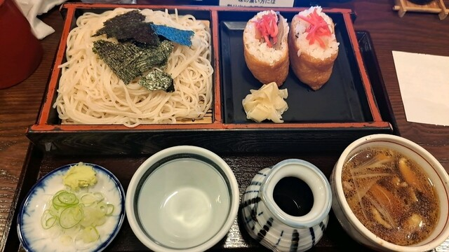
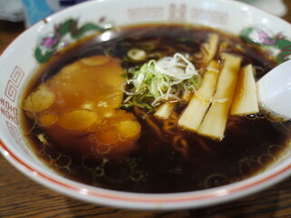

Photo Gallery
そば処 ながやとは
釧路町睦エリアの人気そば処。口コミ472件と釧路市内でも多くの実績を誇る。揚げたて天ぷらそば・豚丼・ちゃわんむしなど多彩なメニューが揃い、地元ファンのリピーターが多い。Instagramで公式アカウントを持ち情報発信も積極的。
実食レビュー
釧路町睦の人気そば処。「Lovely restaurant with delicious food」「I was surprised when the waitress brought me an English menu」と外国人旅行者にも評価が高い。特に揚げたての天ぷらを目の前で盛り付けるスタイルが好評で、天ぷらそばを頼んだ際に甘みのあるサツマイモ天が絶品と口コミで話題。
そばメニューに加え豚丼・ちゃわんむし・定食などバリエーションも豊富。Instagramで公式アカウントを持ち、店内の雰囲気やメニューを随時発信している。
おすすめメニュー
- 天ぷらそば（温・冷） ¥1,200〜 — 揚げたての海老・野菜天ぷら付き。サツマイモが評判
- 豚丼 ¥1,100〜 — 道産豚の炭火焼きタレ漬け丼。ご飯が進む
- ちゃわんむし ¥400〜 — 手作りの滑らかな茶碗蒸し。単品でも注文可
- 三天そばセット（冷） ¥1,600〜 — 三種の天ぷらとざるそばの贅沢なセット
📎 最新の営業時間・メニューは公式情報をご確認ください
アクセス・予約
訪問のコツ
- 水・木曜定休。月火金土日の11:00〜営業（土日は17:00まで）
- 店舗前8台の無料駐車場あり
- 開店直後は比較的空いているが昼時間帯は混雑することも